| Phiên bản | 1.0 |
| Hệ thống | Hệ thống Quản lý Nhân sự |
| Module | RECR - Tuyển dụng |
| Cơ sở dữ liệu | recr_db |
| Ngày | 2026-07-31 |
| Tác giả | Nam Nguyen |
| Trạng thái | Bản nháp |
Tài liệu này định nghĩa các yêu cầu phần mềm cho module Tuyển dụng của Hệ thống Quản lý Nhân sự.
Module Tuyển dụng quản lý quy trình tuyển dụng từ đầu đến cuối với hệ thống vai trò hai cấp. Vai trò cấp hệ thống (user, super_admin) được quản lý bởi module AUTH. Vai trò cấp tổ chức (HR, Candidate, Employer) được quản lý trong nội bộ tổ chức. Người dùng tự đăng ký với vai trò hệ thống user và nhận vai trò cấp tổ chức khi tham gia hoặc được thêm vào một tổ chức.
| Module | Loại Phụ thuộc | Mô tả |
|---|---|---|
| AUTH | Bắt buộc | Xác thực người dùng và kiểm soát truy cập dựa trên vai trò |
| FILE | Bắt buộc | Lưu trữ tệp cho hồ sơ xin việc và tệp đính kèm của ứng viên (URL tải lên/tải xuống presigned, quản lý metadata tệp) |
| LOG | Tùy chọn | Ghi nhật ký sự kiện cho truy vết kiểm toán |
| Thuật ngữ | Định nghĩa |
|---|---|
| SRS | Đặc tả Yêu cầu Phần mềm |
| FR | Yêu cầu Chức năng |
| NFR | Yêu cầu Phi chức năng |
| UC | Trường hợp sử dụng |
| DR | Yêu cầu Dữ liệu |
| IR | Yêu cầu Tích hợp |
| Vai trò | Mô tả | Tạo mới | Quyền hạn Chính |
|---|---|---|---|
| user | Vai trò mặc định cho người dùng tự đăng ký | Tự đăng ký qua POST /recr/auth/register | Tạo tổ chức, truy cập các tính năng cơ bản |
| super_admin | Quản trị viên hệ thống | Chỉ được tạo bởi admin hiện có (không tự đăng ký) | Truy cập toàn bộ hệ thống, quản lý tất cả tổ chức và người dùng |
| Vai trò | Mô tả | Tạo mới | Quyền hạn Chính |
|---|---|---|---|
| Candidate | Người tìm việc đang tìm kiếm việc làm trong một tổ chức | Được giao bởi chủ sở hữu/quản trị viên tổ chức | Duyệt việc làm, nộp hồ sơ ứng tuyển, xem trạng thái hồ sơ, quản lý hồ sơ cá nhân |
| HR | Thành viên đội ngũ tuyển dụng nội bộ trong một tổ chức | Được giao bởi chủ sở hữu/quản trị viên tổ chức | Duyệt hồ sơ ứng tuyển, lên lịch phỏng vấn, đánh giá ứng viên, quản lý đề nghị tuyển dụng, tạo báo cáo |
| Employer | Chủ sở hữu/quản trị viên tổ chức đăng tin tuyển dụng | Được giao bởi chủ sở hữu/quản trị viên tổ chức (thường là người tạo tổ chức) | Tạo tin tuyển dụng, xem người nộp đơn, duyệt tin tuyển dụng, xem phân tích |
Lưu ý: Một người dùng có thể có các vai trò cấp tổ chức khác nhau trong các tổ chức khác nhau. Vai trò cấp hệ thống xác định những gì người dùng có thể thực hiện trên toàn hệ thống, trong khi vai trò cấp tổ chức xác định những gì người dùng có thể thực hiện trong một tổ chức cụ thể.
| Thuộc tính | Giá trị |
|---|---|
| Mã Module | RECR |
| Tên Module | Tuyển dụng |
| Mô tả | Quản lý tuyển dụng từ đầu đến cuối với hệ thống vai trò hai cấp: vai trò hệ thống (user, super_admin) và vai trò tổ chức (Candidate, HR, Employer). Tích hợp với module FILE để lưu trữ hồ sơ xin việc an toàn qua URL presigned. |
| Cơ sở dữ liệu | recr_db |
| Bảng | recr_users, recr_candidates, recr_candidate_resumes, recr_employers, recr_hr_profiles, recr_jobs, recr_applications, recr_interviews, recr_evaluations, recr_job_requirements, recr_subscription_plans, recr_subscriptions, recr_subscription_history, recr_job_reviews, recr_candidate_reviews, recr_invitations |
| Công nghệ | Node.js, NestJS, PostgreSQL, Drizzle ORM, RabbitMQ, Elasticsearch |
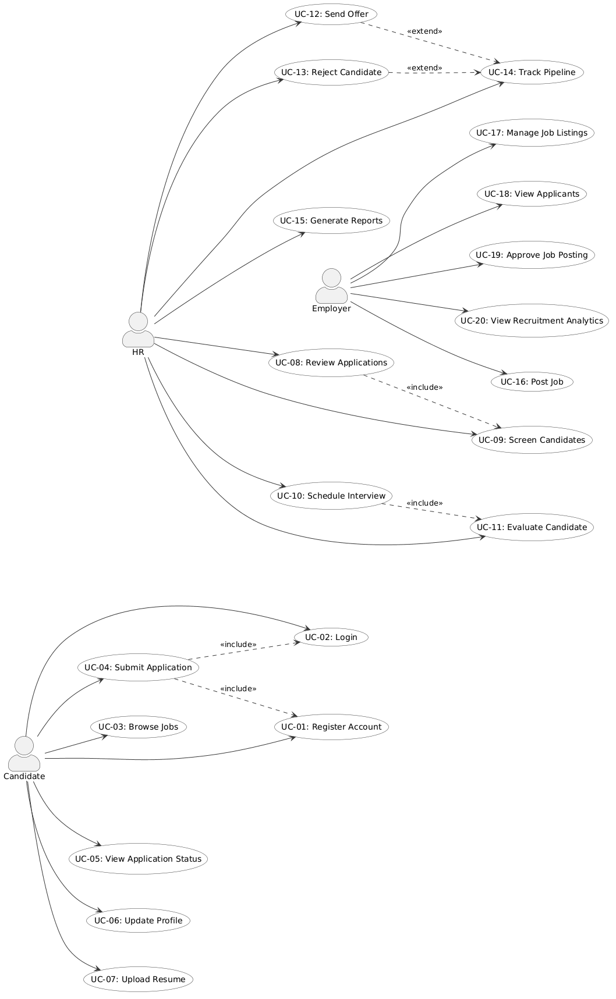
| Trường | Mô tả |
|---|---|
| Mã Trường hợp sử dụng | UC-01 |
| Tên | Mua Gói Đăng ký |
| Diễn viên | Tất cả (Candidate, HR, Employer) |
| Điều kiện tiên quyết | Người dùng đã đăng nhập, chưa có gói đăng ký |
| Điều kiện thành công | Gói đăng ký được kích hoạt, người dùng có thể truy cập tính năng cao cấp |
| Kích hoạt | Người dùng nhấn "Đăng ký gói" |
Luồng Chính:
Lợi ích Đăng ký theo Vai trò:
Luồng Thay thế:
| Trường | Mô tả |
|---|---|
| Mã Trường hợp sử dụng | UC-02 |
| Tên | Quản lý Gói Đăng ký |
| Diễn viên | Tất cả (Candidate, HR, Employer) |
| Điều kiện tiên quyết | Người dùng có gói đăng ký (đang hoạt động hoặc đã hết hạn) |
| Điều kiện thành công | Trạng thái gói đăng ký được cập nhật |
| Kích hoạt | Người dùng truy cập trang quản lý đăng ký |
Luồng Chính:
| Trường | Mô tả |
|---|---|
| Mã Trường hợp sử dụng | UC-03 |
| Tên | Duyệt Việc làm |
| Diễn viên | Candidate |
| Điều kiện tiên quyết | Có việc làm trong hệ thống |
| Điều kiện thành công | Ứng viên xem danh sách việc làm |
| Kích hoạt | Ứng viên truy cập trang danh sách việc làm |
Luồng Chính:
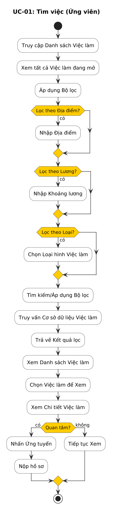
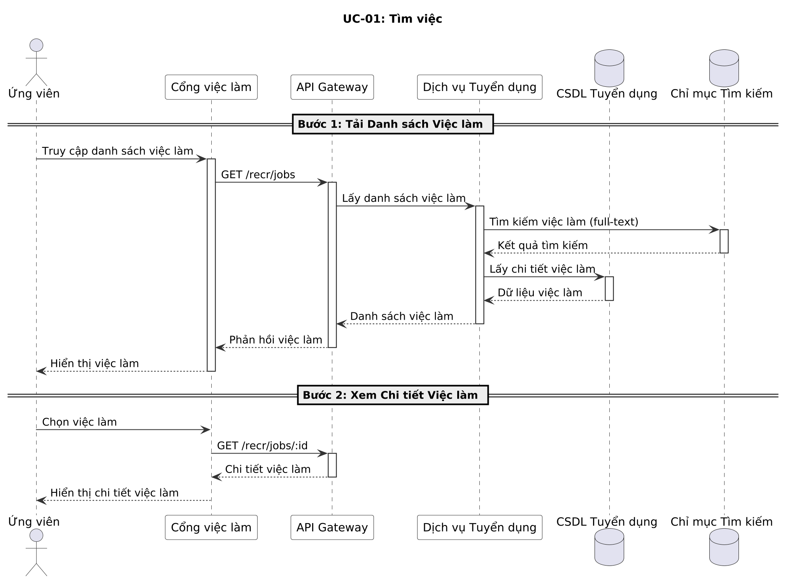
| Trường | Mô tả |
|---|---|
| Mã Trường hợp sử dụng | UC-04 |
| Tên | Nộp Hồ sơ Ứng tuyển |
| Diễn viên | Candidate |
| Điều kiện tiên quyết | Ứng viên đã đăng nhập, việc làm tồn tại |
| Điều kiện thành công | Hồ sơ ứng tuyển được tạo, nhà tuyển dụng được thông báo |
| Kích hoạt | Ứng viên nhấn "Ứng tuyển" trên danh sách việc làm |
Luồng Chính:
resume_file_id vào bản ghi hồ sơ (không thể thay đổi sau khi nộp)Luồng Thay thế:
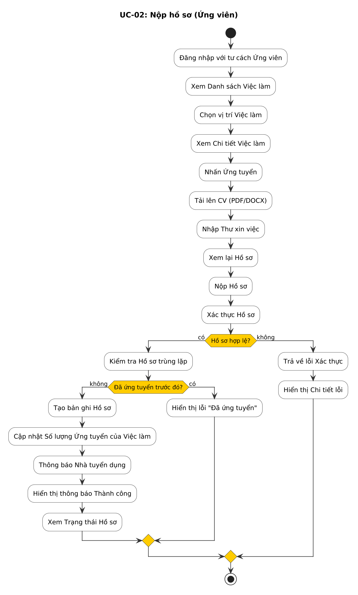
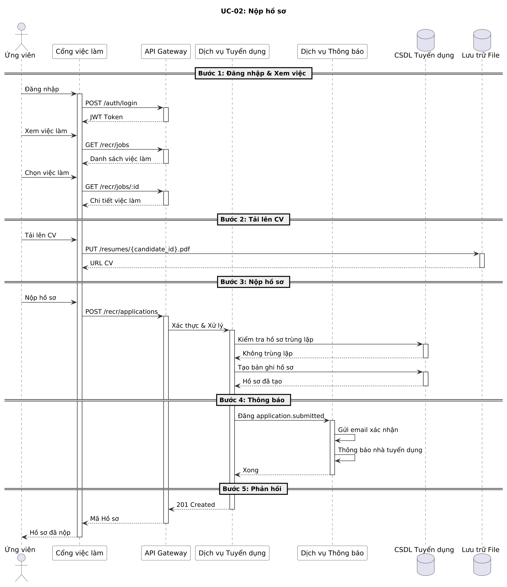
| Trường | Mô tả |
|---|---|
| Mã Trường hợp sử dụng | UC-05 |
| Tên | Xem Trạng thái Hồ sơ |
| Diễn viên | Candidate |
| Điều kiện tiên quyết | Ứng viên đã nộp hồ sơ |
| Điều kiện thành công | Ứng viên xem tiến trình hồ sơ |
| Kích hoạt | Ứng viên truy cập "Hồ sơ của tôi" |
Luồng Chính:
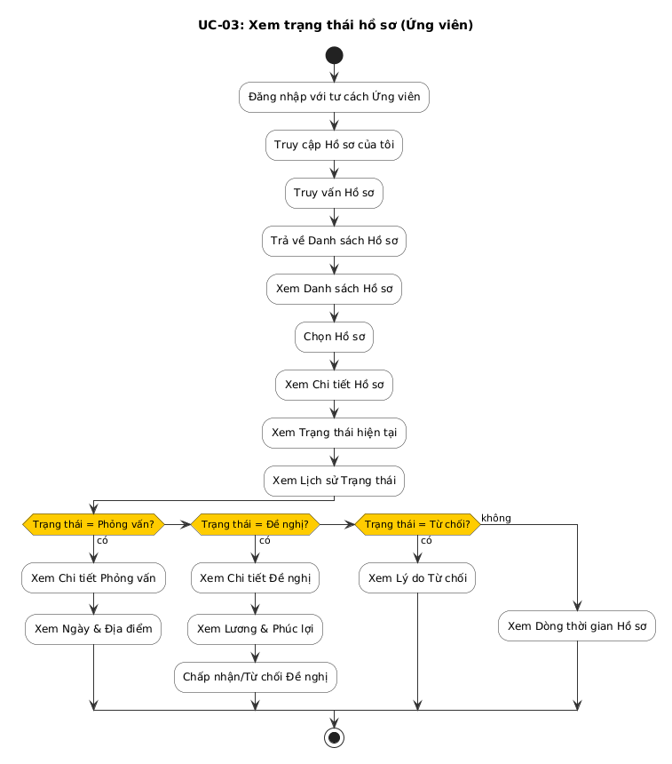
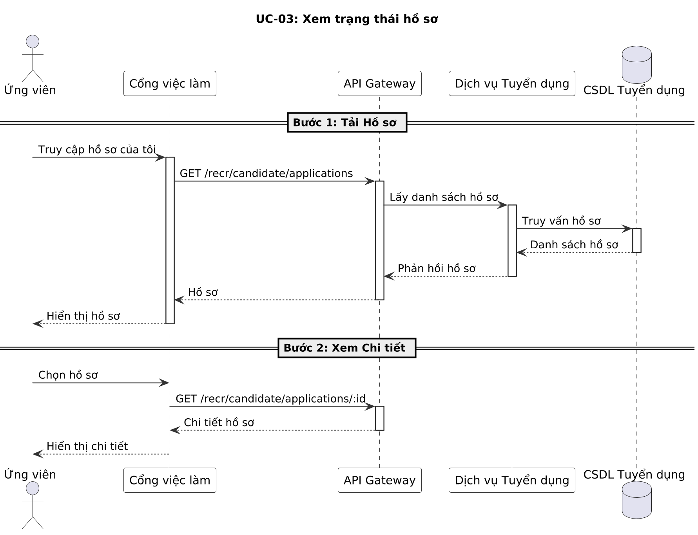
| Trường | Mô tả |
|---|---|
| Mã Trường hợp sử dụng | UC-06 |
| Tên | Duyệt Hồ sơ Ứng tuyển |
| Diễn viên | HR |
| Điều kiện tiên quyết | Có hồ sơ ứng tuyển trong hệ thống |
| Điều kiện thành công | HR duyệt và cập nhật trạng thái hồ sơ |
| Kích hoạt | HR truy cập bảng điều khiển hồ sơ |
Luồng Chính:
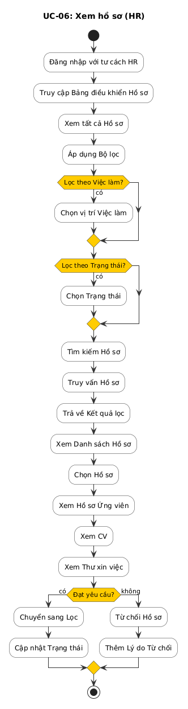
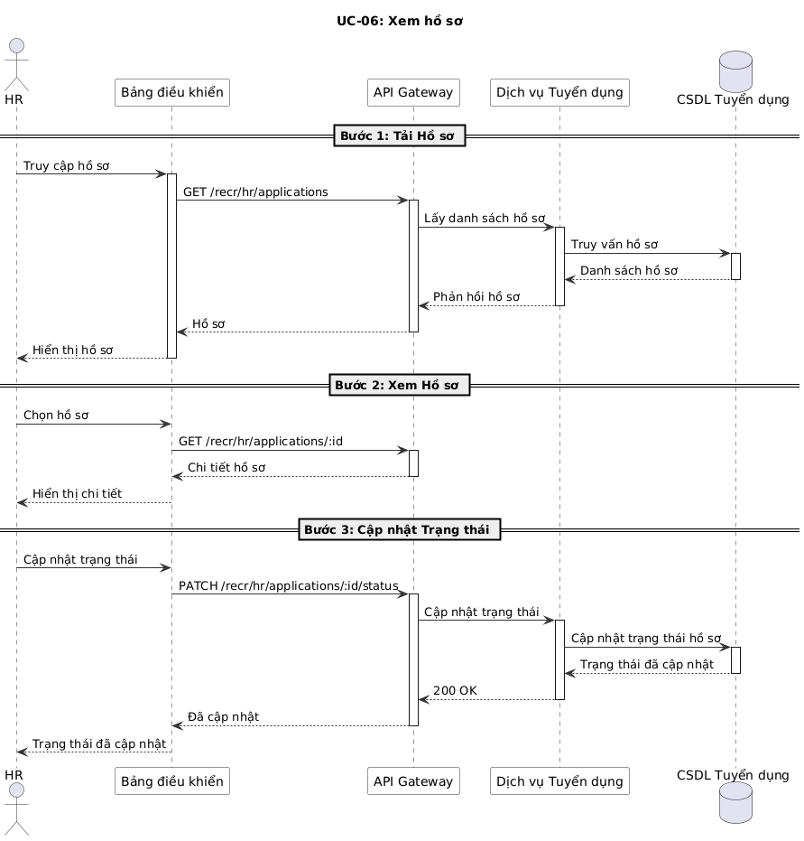
| Trường | Mô tả |
|---|---|
| Mã Trường hợp sử dụng | UC-07 |
| Tên | Lịch phỏng vấn |
| Diễn viên | HR |
| Điều kiện tiên quyết | Ứng viên đã vượt qua sàng lọc |
| Điều kiện thành công | Phỏng vấn được lên lịch, thông báo được gửi |
| Kích hoạt | HR nhấn "Lên lịch phỏng vấn" |
Luồng Chính:
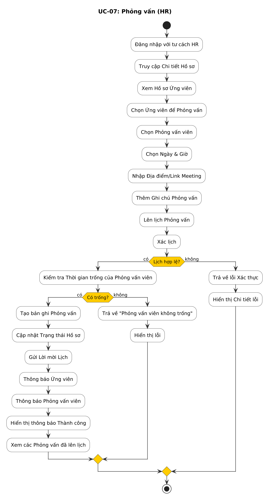
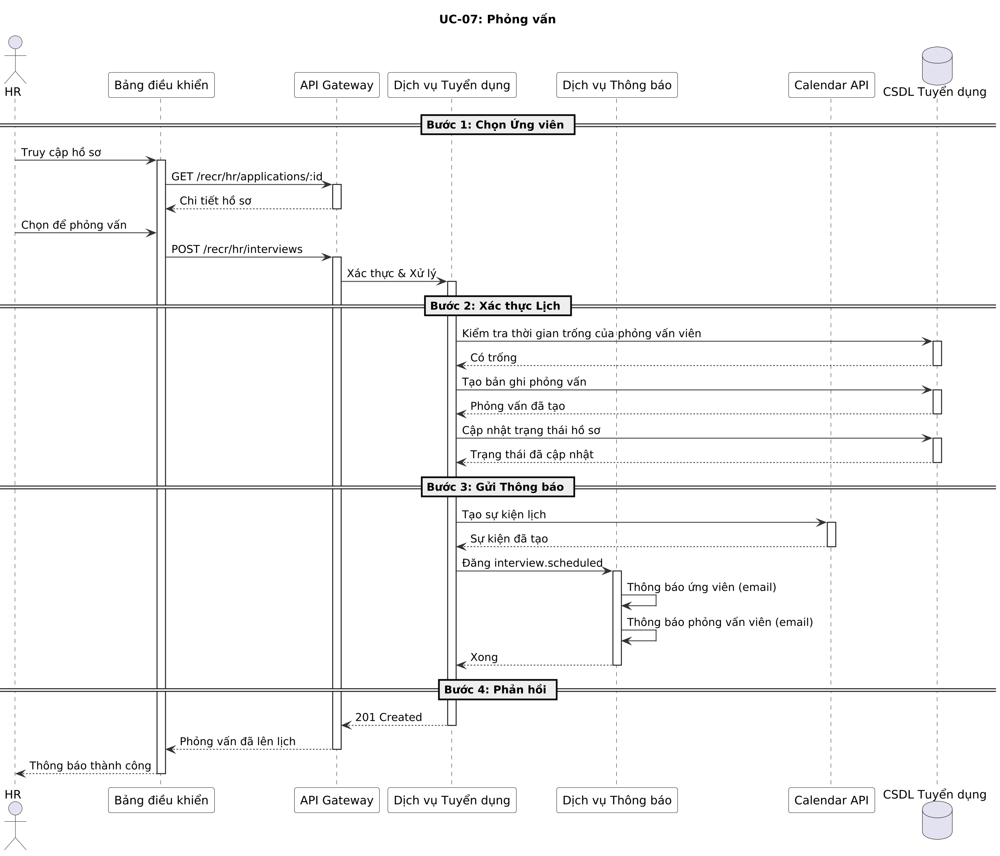
| Trường | Mô tả |
|---|---|
| Mã Trường hợp sử dụng | UC-08 |
| Tên | Đánh giá Ứng viên |
| Diễn viên | HR |
| Điều kiện tiên quyết | Phỏng vấn đã hoàn thành |
| Điều kiện thành công | Đánh giá được ghi nhận |
| Kích hoạt | HR truy cập chi tiết phỏng vấn |
Luồng Chính:
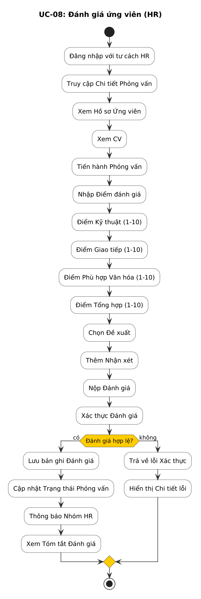
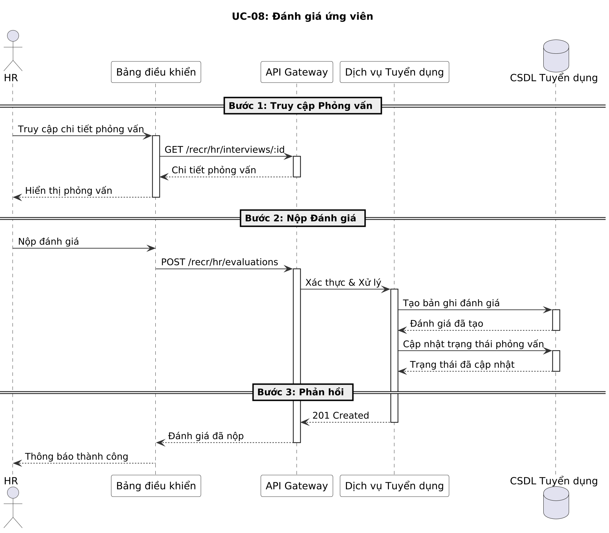
| Trường | Mô tả |
|---|---|
| Mã Trường hợp sử dụng | UC-09 |
| Tên | Đăng tin Việc làm |
| Diễn viên | HR, Employer |
| Điều kiện tiên quyết | Người dùng đã đăng nhập |
| Điều kiện thành công | Việc làm được tạo và gửi để duyệt |
| Kích hoạt | Người dùng nhấn "Tạo Việc làm mới" |
Luồng Chính:
Lưu ý: Đăng ký là tùy chọn. Người dùng có đăng ký sẽ được các tính năng cao cấp như ưu tiên đăng tin, tin được giới thiệu.
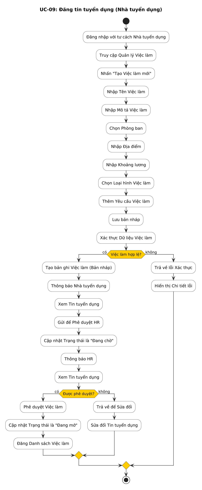
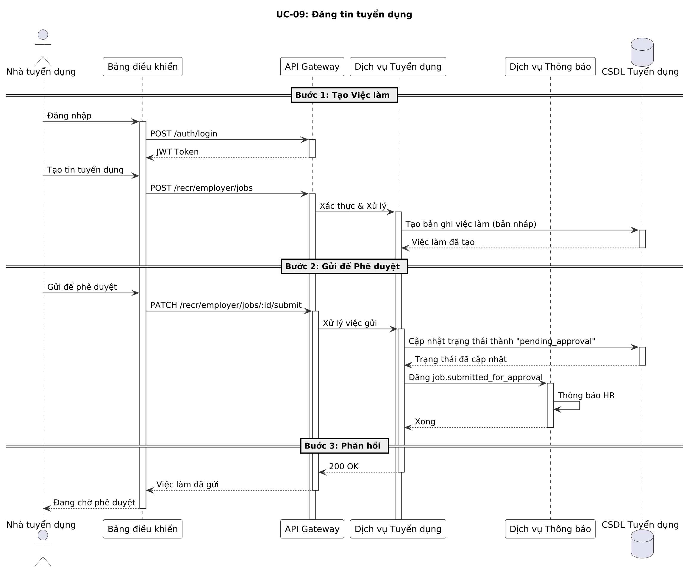
| Trường | Mô tả |
|---|---|
| Mã Trường hợp sử dụng | UC-10 |
| Tên | Quản lý Việc làm |
| Diễn viên | HR, Employer |
| Điều kiện tiên quyết | Người dùng đã tạo việc làm |
| Điều kiện thành công | Trạng thái việc làm được cập nhật |
| Kích hoạt | Người dùng truy cập trang quản lý việc làm |
Luồng Chính:
Luồng Thay thế:
| Trường | Mô tả |
|---|---|
| Mã Trường hợp sử dụng | UC-11 |
| Tên | Đánh giá Việc làm |
| Diễn viên | Candidate |
| Điều kiện tiên quyết | Ứng viên đã ứng tuyển hoặc làm việc tại công ty |
| Điều kiện thành công | Đánh giá việc làm được nộp và hiển thị cho người dùng khác |
| Kích hoạt | Ứng viên nhấn "Đánh giá" trên danh sách việc làm |
Luồng Chính:
Luồng Thay thế:
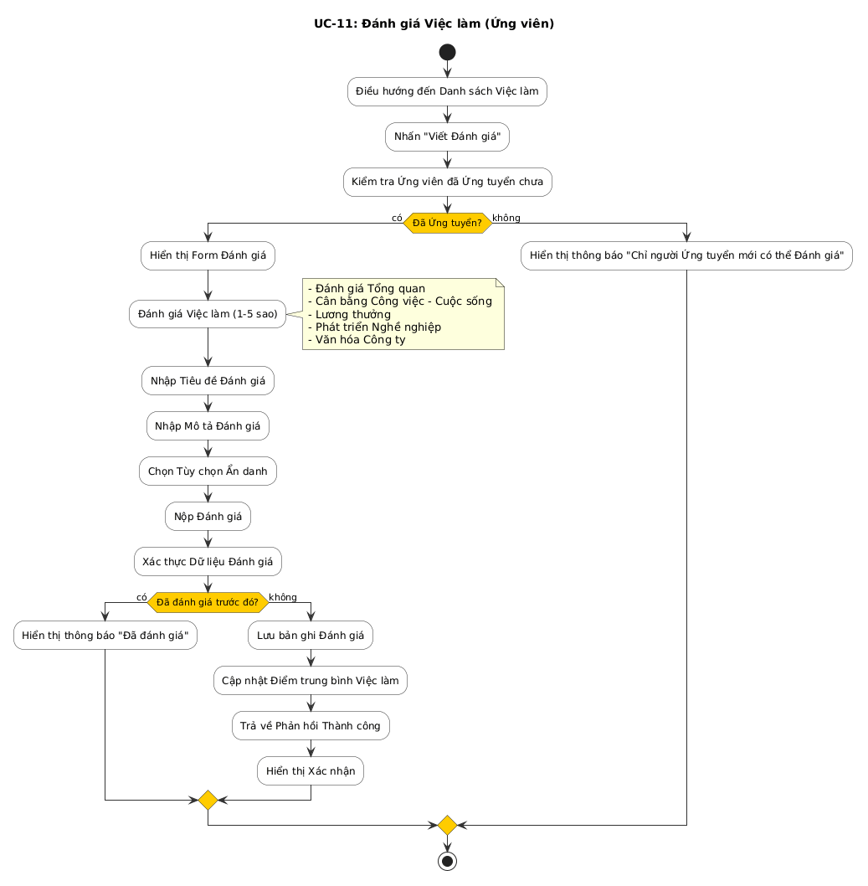
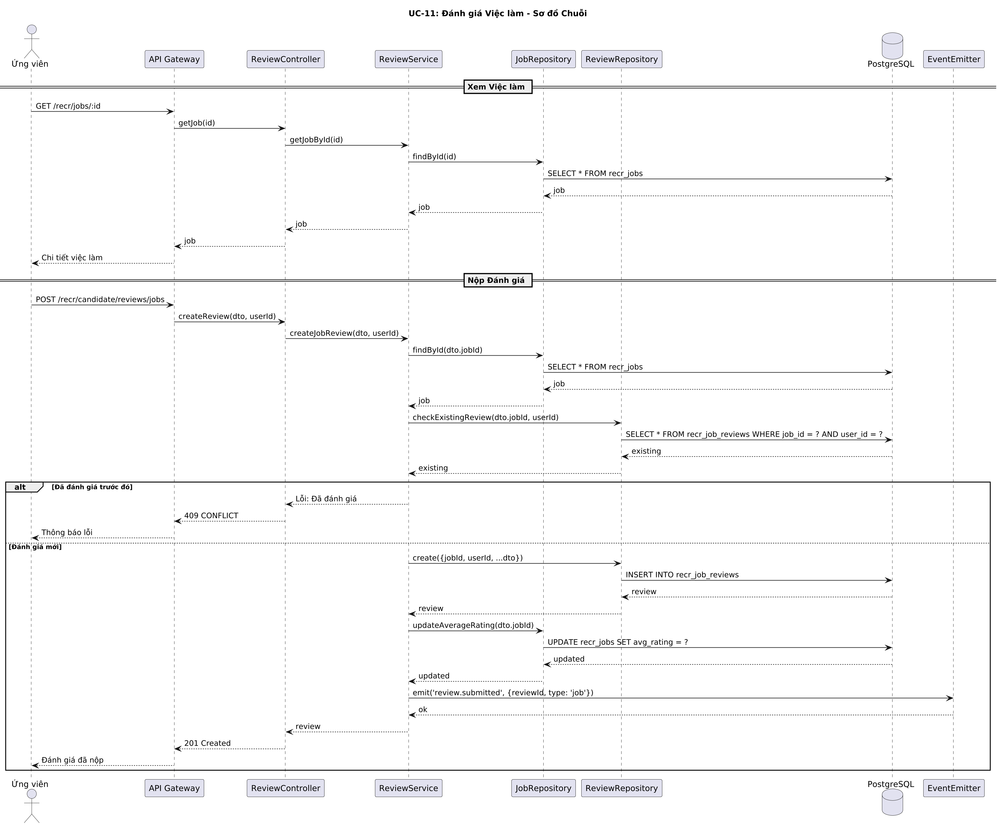
| Trường | Mô tả |
|---|---|
| Mã Trường hợp sử dụng | UC-12 |
| Tên | Đánh giá Ứng viên |
| Diễn viên | HR, Người phỏng vấn |
| Điều kiện tiên quyết | Phỏng vấn đã hoàn thành |
| Điều kiện thành công | Đánh giá ứng viên được nộp |
| Kích hoạt | Người phỏng vấn nhấn "Đánh giá Ứng viên" sau phỏng vấn |
Luồng Chính:
Luồng Thay thế:
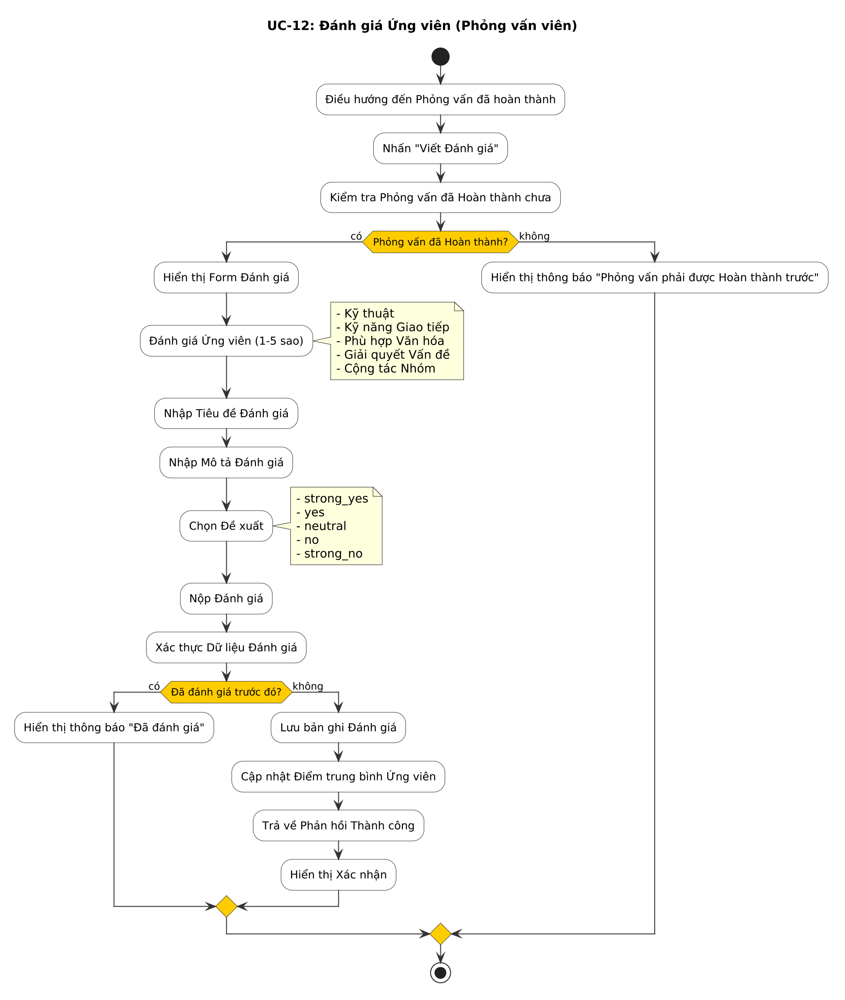
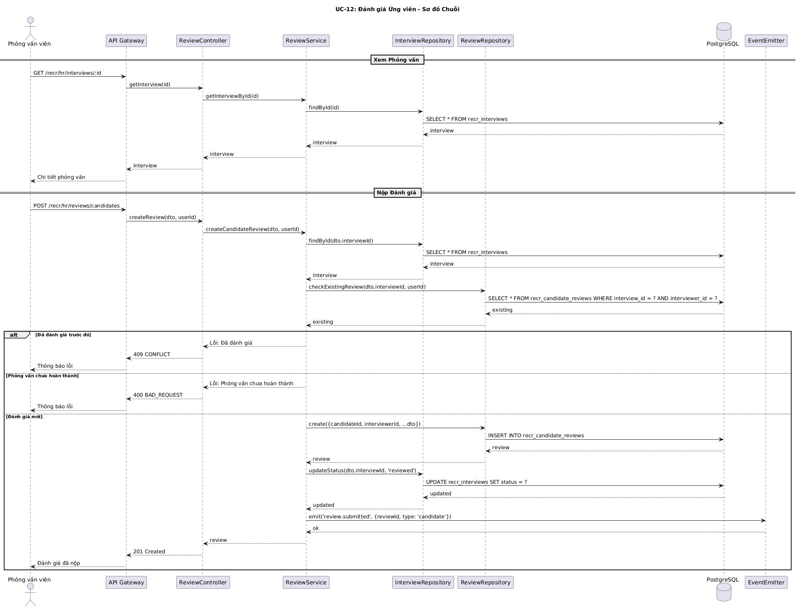
| Trường | Mô tả |
|---|---|
| Mã Trường hợp sử dụng | UC-13 |
| Tên | Cập nhật Hồ sơ |
| Diễn viên | Tất cả (Candidate, HR, Employer) |
| Điều kiện tiên quyết | Người dùng đã đăng nhập |
| Điều kiện thành công | Hồ sơ được cập nhật thành công |
| Kích hoạt | Người dùng nhấn "Chỉnh sửa Hồ sơ" |
Luồng Chính:
Luồng Thay thế:
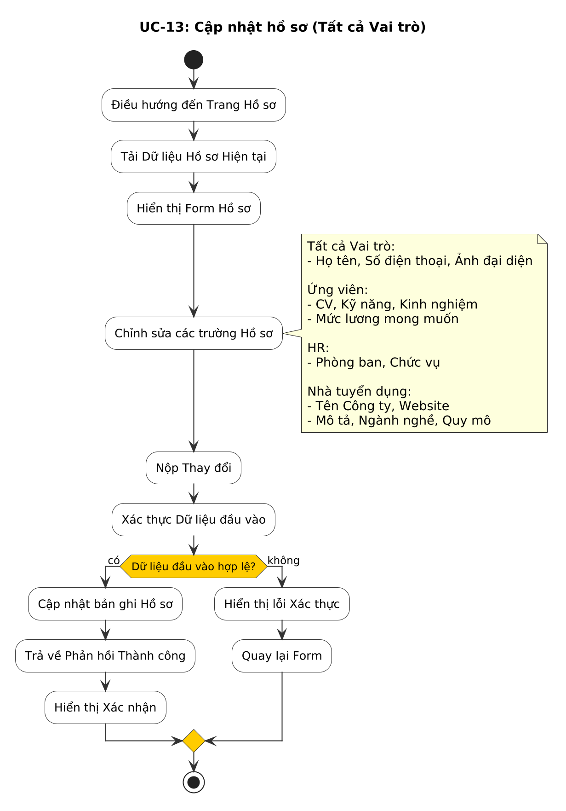
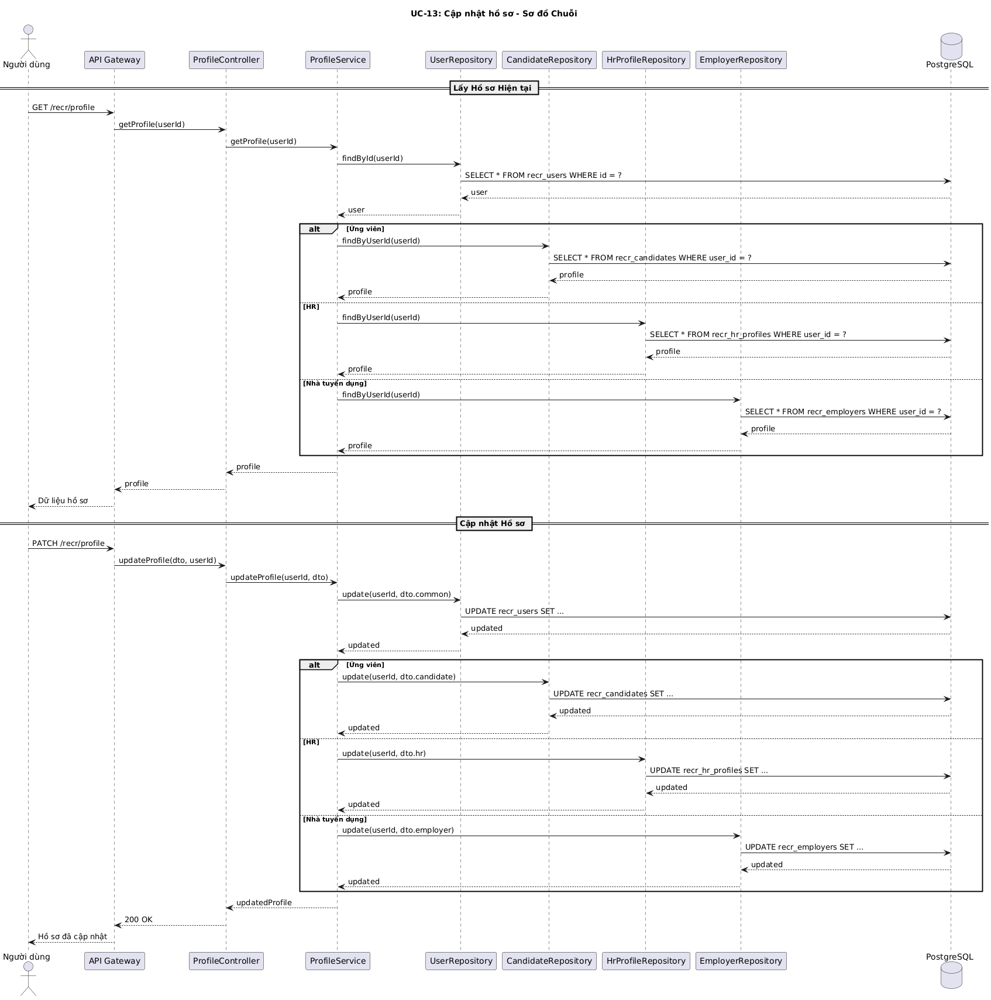
| Trường | Mô tả |
|---|---|
| Mã Trường hợp sử dụng | UC-14 |
| Tên | Xem Bảng Điều khiển |
| Diễn viên | HR, Employer |
| Điều kiện tiên quyết | Người dùng đã đăng nhập |
| Điều kiện thành công | Người dùng xem bảng điều khiển phân tích |
| Kích hoạt | Người dùng nhấn menu "Bảng điều khiển" |
Luồng Chính:
Luồng Thay thế:
| Trường | Mô tả |
|---|---|
| Mã Trường hợp sử dụng | UC-15 |
| Tên | Quản lý Hồ sơ Xin việc |
| Diễn viên | Candidate |
| Điều kiện tiên quyết | Ứng viên đã đăng nhập |
| Điều kiện thành công | Danh sách hồ sơ của ứng viên được cập nhật |
| Kích hoạt | Ứng viên điều hướng đến trang "Hồ sơ của tôi" |
Luồng Chính:
{candidate_user_id}/resumes/{uuid}.pdfrecr_candidate_resumes với tham chiếu file_idLuồng Thay thế:
| Trường | Mô tả |
|---|---|
| Mã Trường hợp sử dụng | UC-16 |
| Tên | Cấu hình Webhook Công ty |
| Diễn viên | HR (Admin tổ chức) |
| Điều kiện tiên quyết | HR đã đăng nhập, có quyền quản trị tổ chức |
| Điều kiện thành công | Webhook được lưu và kích hoạt/vô hiệu hóa thành công |
| Kích hoạt | HR truy cập "Cài đặt Công ty" > "Tích hợp Webhook" |
Luồng Chính:
application.submittedwebhook.test) đến URL để xác minh endpoint phản hồi 2xxLuồng Thay thế:
| Mã Yêu cầu | Module | Yêu cầu | Trường hợp SD | Ưu tiên | Mô tả |
|---|---|---|---|---|---|
| FR-001 | RECR | Đăng ký Người dùng | UC-01 | Cao | Người dùng có thể đăng ký tài khoản với email, mật khẩu và thông tin hồ sơ cơ bản. Tạo người dùng với vai trò hệ thống user. Các vai trò cấp tổ chức (HR, Candidate, Employer) được giao trong nội bộ tổ chức. |
| FR-002 | RECR | Đăng nhập | UC-02 | Cao | Tất cả người dùng có thể đăng nhập bằng email/mật khẩu và nhận JWT token |
| FR-003 | RECR | Duyệt Việc làm | UC-03 | Cao | Ứng viên có thể duyệt và tìm kiếm việc làm với bộ lọc (địa điểm, lương, loại hình) |
| FR-004 | RECR | Nộp Hồ sơ Ứng tuyển | UC-04 | Cao | Ứng viên có thể nộp hồ sơ với hồ sơ được chọn (từ danh sách hồ sơ) hoặc hồ sơ mới tải lên, kèm thư xin việc. resume_file_id được đóng băng tại thời điểm nộp và trở nên không thể thay đổi trên bản ghi hồ sơ. |
| FR-005 | RECR | Xem Trạng thái Hồ sơ | UC-05 | Cao | Ứng viên có thể theo dõi tiến trình hồ sơ qua các giai đoạn tuyển dụng |
| FR-006 | RECR | Cập nhật Hồ sơ Ứng viên | UC-13 | Trung bình | Ứng viên có thể cập nhật hồ sơ, kỹ năng và kinh nghiệm |
| FR-007 | RECR | Tải lên Hồ sơ | UC-15 | Cao | Ứng viên có thể tải lên và quản lý nhiều tệp hồ sơ (PDF/DOCX, tối đa 10MB mỗi tệp) qua module FILE. Tệp được lưu tại {candidate_user_id}/resumes/{uuid}.pdf. Metadata được lưu trong bảng recr_candidate_resumes với tham chiếu file_id đến sys_files. |
| FR-037 | RECR | Quản lý Hồ sơ Ứng viên | UC-15 | Cao | Ứng viên có thể liệt kê, tải lên, đặt chính và xóa hồ sơ từ danh sách hồ sơ. Xóa hồ sơ chỉ được phép khi hồ sơ chưa được liên kết với bất kỳ hồ sơ ứng tuyển nào. |
| FR-038 | RECR | Liên kết Hồ sơ Ứng tuyển | UC-04 | Cao | Khi ứng viên nộp hồ sơ, hồ sơ được chọn được liên kết bằng cách sao chép resume_file_id vào bản ghi hồ sơ. Tham chiếu tệp này không thể thay đổi sau khi nộp (đóng băng tại thời điểm nộp). |
| Mã Yêu cầu | Module | Yêu cầu | Trường hợp SD | Ưu tiên | Mô tả |
|---|---|---|---|---|---|
| FR-008 | RECR | Duyệt Hồ sơ Ứng tuyển | UC-06 | Cao | HR có thể duyệt hồ sơ, lọc theo việc làm, trạng thái và trình độ ứng viên. Xem hồ sơ xin việc qua URL tải xuống presigned từ module FILE. |
| FR-009 | RECR | Sàng lọc Ứng viên | UC-06 | Cao | HR có thể sàng lọc ứng viên và chuyển họ qua các giai đoạn tuyển dụng |
| FR-010 | RECR | Lên lịch Phỏng vấn | UC-07 | Cao | HR có thể lên lịch phỏng vấn với ngày/giờ, địa điểm, liên kết họp |
| FR-011 | RECR | Đánh giá Ứng viên | UC-08 | Cao | HR có thể gửi đánh giá với điểm số và đề xuất |
| FR-012 | RECR | Từ chối Ứng viên | UC-06 | Cao | HR có thể từ chối ứng viên với lý do tùy chọn |
| FR-013 | RECR | Theo dõi Quy trình | UC-06 | Cao | HR có thể xem quy trình tuyển dụng với số lượng ứng viên theo giai đoạn |
| FR-014 | RECR | Tạo Báo cáo | UC-06 | Trung bình | HR có thể tạo báo cáo chỉ số và phân tích tuyển dụng |
| FR-028 | RECR | HR Đăng tin Việc làm | UC-09 | Cao | HR có thể tạo tin tuyển dụng cho tổ chức của mình |
| FR-029 | RECR | HR Quản lý Việc làm | UC-10 | Cao | HR có thể chỉnh sửa, đóng hoặc lưu trữ tin tuyển dụng |
| FR-032 | RECR | Cập nhật Hồ sơ HR | UC-13 | Trung bình | HR có thể cập nhật phòng ban, chức vụ và thông tin cá nhân |
| FR-047 | RECR | Cấu hình Webhook | UC-16 | Trung bình | HR có thể cấu hình một URL webhook đích và bật/tắt trạng thái gửi sự kiện cho tổ chức của mình. Mỗi tổ chức chỉ có một cấu hình webhook. Khi tắt (is_active = false), hệ thống ngừng gửi mọi sự kiện đến URL đó nhưng vẫn giữ lại cấu hình. |
| Mã Yêu cầu | Module | Yêu cầu | Trường hợp SD | Ưu tiên | Mô tả |
|---|---|---|---|---|---|
| FR-015 | RECR | Đăng ký Nhà tuyển dụng | UC-01 | Cao | Nhà tuyển dụng có thể đăng ký tài khoản công ty với thông tin công ty |
| FR-016 | RECR | Đăng tin Việc làm | UC-09 | Cao | Nhà tuyển dụng có thể tạo tin tuyển dụng với yêu cầu và khoảng lương |
| FR-017 | RECR | Quản lý Tin tuyển dụng | UC-10 | Cao | Nhà tuyển dụng có thể chỉnh sửa, đóng hoặc lưu trữ tin tuyển dụng |
| FR-018 | RECR | Xem Người nộp đơn | UC-10 | Cao | Nhà tuyển dụng có thể xem người nộp đơn cho việc làm đã đăng |
| FR-019 | RECR | Duyệt Tin tuyển dụng | UC-09 | Trung bình | Nhà tuyển dụng có thể gửi việc làm để HR duyệt trước khi công bố. Nhà tuyển dụng cũng có thể xem hồ sơ xin việc qua URL tải xuống presigned từ module FILE khi xem người nộp đơn cho tin tuyển dụng. |
| FR-020 | RECR | Xem Phân tích | UC-10 | Trung bình | Nhà tuyển dụng có thể xem phân tích tuyển dụng cho tin tuyển dụng |
| FR-033 | RECR | Cập nhật Hồ sơ Nhà tuyển dụng | UC-13 | Trung bình | Nhà tuyển dụng có thể cập nhật thông tin công ty, mô tả và branding |
| Mã Yêu cầu | Module | Yêu cầu | Trường hợp SD | Ưu tiên | Mô tả |
|---|---|---|---|---|---|
| FR-021 | RECR | Gói Đăng ký | UC-01 | Cao | Hệ thống cung cấp 3 gói đăng ký: 1 tháng, 6 tháng (giảm 10%), 1 năm (2 tháng miễn phí) |
| FR-022 | RECR | Mua Đăng ký | UC-01 | Trung bình | Tất cả người dùng (Candidate, HR, Employer) có thể tùy chọn mua đăng ký cho tính năng cao cấp |
| FR-023 | RECR | Kiểm soát Truy cập Đăng ký | UC-01, UC-02 | Cao | Hệ thống kiểm tra trạng thái đăng ký để cung cấp tính năng cao cấp |
| FR-024 | RECR | Xác thực Đăng ký | UC-02 | Cao | Hệ thống kiểm tra trạng thái đăng ký trước khi cho phép truy cập tính năng bị giới hạn |
| FR-025 | RECR | Gia hạn Đăng ký | UC-02 | Trung bình | Tất cả người dùng có thể gia hạn hoặc nâng cấp đăng ký |
| FR-026 | RECR | Lịch sử Đăng ký | UC-02 | Thấp | Tất cả người dùng có thể xem lịch sử đăng ký và hóa đơn thanh toán |
| Mã Yêu cầu | Module | Yêu cầu | Trường hợp SD | Ưu tiên | Mô tả |
|---|---|---|---|---|---|
| FR-030 | RECR | Đánh giá Việc làm | UC-11 | Trung bình | Ứng viên có thể đánh giá việc làm với điểm số và mô tả |
| FR-031 | RECR | Đánh giá Ứng viên | UC-12 | Trung bình | Người phỏng vấn có thể đánh giá ứng viên với điểm số và đề xuất |
| Mã Yêu cầu | Module | Yêu cầu | Trường hợp SD | Ưu tiên | Mô tả |
|---|---|---|---|---|---|
| FR-034 | RECR | Phân tích Đăng ký Người dùng | UC-14 | Trung bình | Theo dõi và hiển thị thống kê đăng ký người dùng (tổng, hàng ngày, hàng tuần, hàng tháng) |
| FR-035 | RECR | Phân tích Đăng nhập Người dùng | UC-14 | Trung bình | Theo dõi và hiển thị thống kê đăng nhập người dùng (tần suất, thời điểm cao điểm, số lần thất bại) |
| FR-036 | RECR | Xem Bảng điều khiển | UC-14 | Trung bình | Hiển thị bảng điều khiển phân tích tổng hợp với biểu đồ và bộ lọc |
| Mã Yêu cầu | Module | Yêu cầu | Trường hợp SD | Ưu tiên | Mô tả |
|---|---|---|---|---|---|
| FR-039 | RECR | Gửi Lời mời | UC-19 | Cao | HR/Employer có thể gửi lời mời đến ứng viên hoặc HR qua email với vai trò tổ chức được giao |
| FR-040 | RECR | Tạo Token Lời mời | UC-19 | Cao | Hệ thống tạo token ngẫu nhiên an toàn, lưu băm SHA-256, đưa token gốc vào URL lời mời |
| FR-041 | RECR | Gửi Email Lời mời | UC-19 | Cao | Hệ thống phát sự kiện RabbitMQ tới module EMAIL để gửi email lời mời |
| FR-042 | RECR | Xác minh Token Lời mời | UC-20 | Cao | Hệ thống xác thực token lời mời khi nhấp, kiểm tra hết hạn và trạng thái |
| FR-043 | RECR | Chấp nhận Lời mời | UC-21 | Cao | Hệ thống cập nhật trạng thái lời mời thành ACCEPTED và phát sự kiện cho module AUTH |
| FR-044 | RECR | Thu hồi Lời mời | UC-22 | Trung bình | HR/Employer có thể hủy lời mời đang chờ |
| FR-045 | RECR | Liệt kê Lời mời | UC-19 | Trung bình | Hệ thống cho phép xem tất cả lời mời với bộ lọc và phân trang |
| FR-046 | RECR | Gửi lại Lời mời | UC-22 | Trung bình | Hệ thống tạo token mới cho lời mời hết hạn hoặc bị thu hồi và gửi lại email |
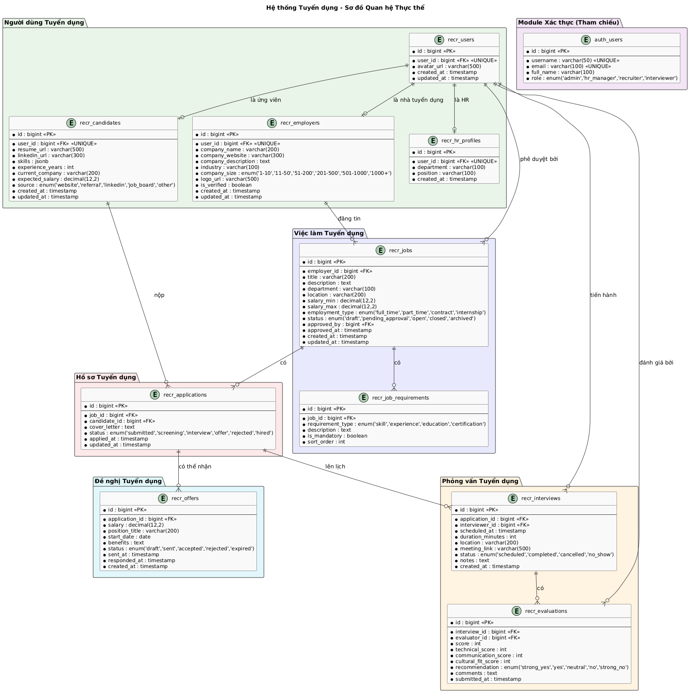
| Mã Yêu cầu | Thực thể | Mô tả | FR Liên quan |
|---|---|---|---|
| DR-001 | recr_users | Tài khoản người dùng với xác thực dựa trên vai trò | FR-001, FR-002, FR-016 |
| DR-002 | recr_candidates | Hồ sơ ứng viên với kỹ năng (resume_link được thay bằng tham chiếu file_id qua recr_candidate_resumes) | FR-006, FR-007 |
| DR-002a | recr_candidate_resumes | Danh sách hồ sơ ứng viên với tham chiếu file_id module FILE (hỗ trợ nhiều hồ sơ mỗi ứng viên) | FR-007, FR-037, FR-038 |
| DR-003 | recr_employers | Hồ sơ công ty nhà tuyển dụng | FR-016 |
| DR-004 | recr_jobs | Tin tuyển dụng với yêu cầu | FR-017, FR-018 |
| DR-005 | recr_applications | Hồ sơ ứng tuyển liên kết ứng viên với việc làm, với tham chiếu resume_file_id đóng băng tới module FILE | FR-004, FR-005, FR-038 |
| DR-006 | recr_interviews | Lên lịch và trạng thái phỏng vấn | FR-010 |
| DR-007 | recr_evaluations | Điểm đánh giá phỏng vấn | FR-011 |
| DR-008 | recr_hr_profiles | Hồ sơ người dùng HR | - |
| DR-009 | recr_job_requirements | Yêu cầu việc làm | FR-016, FR-017 |
| DR-010 | recr_subscription_plans | Định nghĩa gói đăng ký | FR-021 |
| DR-010 | recr_subscriptions | Đăng ký người dùng | FR-023, FR-024 |
| DR-011 | recr_subscription_history | Lịch sử thay đổi đăng ký | FR-027 |
| DR-012 | recr_job_reviews | Đánh giá việc làm từ ứng viên | FR-030 |
| DR-013 | recr_candidate_reviews | Đánh giá ứng viên từ người phỏng vấn | FR-031 |
| DR-014 | recr_invitations | Bản ghi lời mời với xác minh dựa trên token | FR-039, FR-042, FR-043, FR-044 |
| DR-015 | recr_webhook_configs | Cấu hình webhook tổ chức — mỗi tổ chức có tối đa 1 cấu hình | FR-047 |
| Cột | Kiểu | Mô tả |
|---|---|---|
id | UUID | Khóa chính |
organization_id | UUID | FK đến tổ chức (1 tổ chức = 1 config) |
webhook_url | VARCHAR | URL đích, bắt buộc HTTPS |
is_active | BOOLEAN | Bật/tắt gửi webhook |
subscribed_events | JSON/ARRAY | Danh sách sự kiện đăng ký (vd: ["application.submitted"]) |
secret_key | VARCHAR | Dùng để ký HMAC payload, xác thực nguồn gửi |
status | ENUM | verified / unverified / failed |
last_triggered_at | TIMESTAMP | Lần bắn gần nhất |
created_by | UUID | Người tạo (audit) |
created_at | TIMESTAMP | Thời điểm tạo (audit) |
updated_at | TIMESTAMP | Thời điểm cập nhật (audit) |
| Phương thức | Đường dẫn | Mô tả | Mã Yêu cầu |
|---|---|---|---|
| POST | /recr/auth/register | Đăng ký người dùng mới với vai trò hệ thống user | FR-001 |
| POST | /recr/auth/login | Đăng nhập bằng email/mật khẩu | FR-002 |
| Phương thức | Đường dẫn | Mô tả | Mã Yêu cầu |
|---|---|---|---|
| GET | /recr/jobs | Duyệt tin tuyển dụng | FR-003 |
| POST | /recr/applications | Nộp hồ sơ ứng tuyển | FR-004, FR-038 |
| GET | /recr/candidate/applications | Xem hồ sơ của tôi | FR-005 |
| PATCH | /recr/candidate/profile | Cập nhật hồ sơ | FR-006 |
| POST | /recr/candidate/resume | Tải lên hồ sơ (qua module FILE) | FR-007, FR-037 |
| GET | /recr/candidate/resumes | Liệt kê hồ sơ của tôi | FR-037 |
| DELETE | /recr/candidate/resumes/:id | Xóa hồ sơ | FR-037 |
| GET | /recr/candidate/applications/:id/resume | Lấy URL tải xuống presigned cho hồ sơ ứng tuyển | FR-038 |
| POST | /recr/candidate/reviews/jobs | Đánh giá việc làm | FR-030 |
| GET | /recr/candidate/reviews/jobs/:jobId | Lấy đánh giá việc làm | FR-030 |
| Phương thức | Đường dẫn | Mô tả | Mã Yêu cầu |
|---|---|---|---|
| GET | /recr/hr/applications | Duyệt hồ sơ ứng tuyển | FR-008 |
| PATCH | /recr/hr/applications/:id/status | Cập nhật trạng thái hồ sơ | FR-009 |
| POST | /recr/hr/interviews | Lên lịch phỏng vấn | FR-010 |
| POST | /recr/hr/evaluations | Gửi đánh giá | FR-011 |
| GET | /recr/hr/pipeline | Xem quy trình tuyển dụng | FR-013 |
| GET | /recr/hr/reports | Tạo báo cáo | FR-014 |
| POST | /recr/hr/jobs | Tạo tin tuyển dụng | FR-028 |
| GET | /recr/hr/jobs | Liệt kê việc làm của tôi | FR-029 |
| PATCH | /recr/hr/jobs/:id | Cập nhật tin tuyển dụng | FR-029 |
| GET | /recr/hr/jobs/:id/applicants | Xem người nộp đơn cho việc làm | FR-029 |
| POST | /recr/hr/reviews/candidates | Đánh giá ứng viên | FR-031 |
| GET | /recr/hr/reviews/candidates/:candidateId | Lấy đánh giá ứng viên | FR-031 |
| GET | /recr/hr/settings/webhook | Lấy cấu hình webhook hiện tại | FR-047 |
| PUT | /recr/hr/settings/webhook | Tạo/cập nhật URL + bật/tắt | FR-047 |
| POST | /recr/hr/settings/webhook/test | Gửi sự kiện test xác minh URL | FR-047 |
| Phương thức | Đường dẫn | Mô tả | Mã Yêu cầu |
|---|---|---|---|
| GET | /recr/subscription/plans | Liệt kê gói đăng ký | FR-021 |
| POST | /recr/subscription/purchase | Mua đăng ký | FR-022 |
| GET | /recr/subscription/status | Lấy trạng thái đăng ký | FR-024 |
| POST | /recr/subscription/renew | Gia hạn đăng ký | FR-025 |
| GET | /recr/subscription/history | Xem lịch sử đăng ký | FR-026 |
| Phương thức | Đường dẫn | Mô tả | Mã Yêu cầu |
|---|---|---|---|
| POST | /recr/invitations/send | Gửi lời mời đến ứng viên/HR | FR-039, FR-040, FR-041 |
| GET | /recr/invitations/verify | Xác minh token lời mời (Công khai) | FR-042 |
| POST | /recr/invitations/accept | Chấp nhận lời mời | FR-043 |
| GET | /recr/invitations | Liệt kê lời mời | FR-045 |
| DELETE | /recr/invitations/:id | Thu hồi lời mời | FR-044 |
| POST | /recr/invitations/:id/resend | Gửi lại lời mời | FR-046 |
| Phương thức | Đường dẫn | Mô tả | Mã Yêu cầu |
|---|---|---|---|
| POST | /recr/employer/jobs | Tạo tin tuyển dụng | FR-016 |
| GET | /recr/employer/jobs | Liệt kê việc làm của tôi | FR-017 |
| PATCH | /recr/employer/jobs/:id | Cập nhật tin tuyển dụng | FR-017 |
| GET | /recr/employer/jobs/:id/applicants | Xem người nộp đơn | FR-018 |
| PATCH | /recr/employer/jobs/:id/submit | Gửi để duyệt | FR-019 |
| GET | /recr/employer/analytics | Xem phân tích | FR-020 |
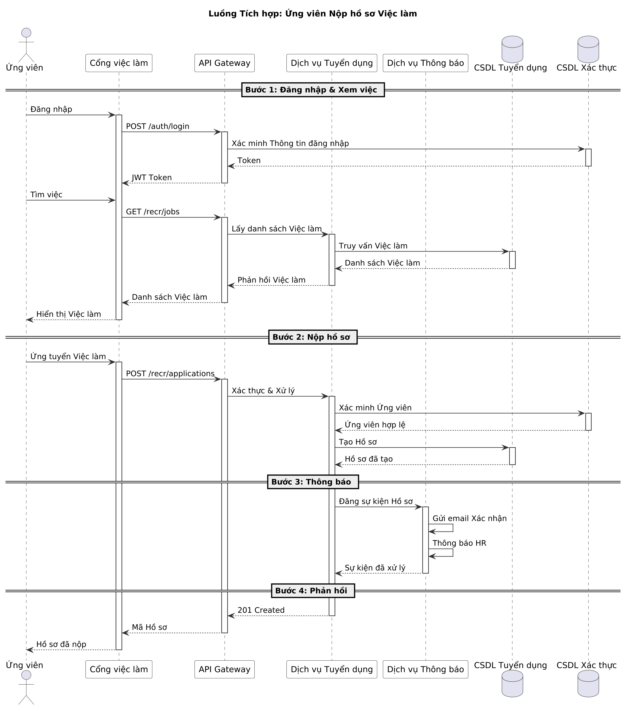
Giao tiếp giữa các module trong hệ thống, dùng RabbitMQ làm message broker.
| Sự kiện | Hướng | Mô tả |
|---|---|---|
| application.submitted | Đi ra | Được kích hoạt khi ứng viên nộp hồ sơ |
| interview.scheduled | Đi ra | Được kích hoạt khi phỏng vấn được lên lịch |
| job.submitted_for_approval | Đi ra | Được kích hoạt khi HR/Employer gửi việc làm để duyệt |
| subscription.purchased | Đi ra | Được kích hoạt khi người dùng mua đăng ký |
| file.deleted | Đi vào | Nhận từ module FILE khi tệp bị xóa; RECR dọn dẹp tham chiếu trong recr_candidate_resumes và recr_applications |
| invitation.created | Đi ra | Được kích hoạt khi lời mời được tạo |
| invitation.accepted | Đi ra | Được kích hoạt khi lời mời được chấp nhận |
HR cấu hình URL đích để nhận sự kiện từ hệ thống ra bên ngoài (ATS, Slack, CRM...). Được ký bằng HMAC secret_key để xác thực nguồn gửi.
| Sự kiện | Mô tả | Ví dụ sử dụng |
|---|---|---|
application.submitted | Ứng viên nộp hồ sơ ứng tuyển | Push sang ATS / CRM |
job.submitted_for_approval | Việc làm được gửi duyệt | Thông báo Slack cho quản lý |
interview.scheduled | Phỏng vấn được lên lịch | Tạo sự kiện trên Google Calendar |
subscription.purchased | Người dùng mua gói đăng ký | Ghi nhận trên hệ thống kế toán |
webhook.test | Sự kiện test khi cấu hình webhook | Xác minh endpoint phản hồi 2xx |
Lưu ý: Mặc định khi tạo webhook, sự kiện application.submitted được chọn sẵn. HR có thể bổ sung thêm sự kiện sau đó.
| Endpoint | Method | Mô tả |
|---|---|---|
| /recr/hr/settings/webhook | GET | Lấy cấu hình webhook hiện tại |
| /recr/hr/settings/webhook | PUT | Tạo/cập nhật URL + bật/tắt |
| /recr/hr/settings/webhook/test | POST | Gửi sự kiện test xác minh URL |
| Mã Yêu cầu | Danh mục | Yêu cầu | Mục tiêu |
|---|---|---|---|
| NFR-001 | Hiệu suất | Thời gian phản hồi API cho truy vấn danh sách | < 500ms (p95) |
| NFR-002 | Hiệu suất | Xử lý nộp hồ sơ ứng tuyển | < 2s |
| NFR-003 | Khả năng mở rộng | Hỗ trợ người dùng đồng thời | 500+ người dùng đồng thời |
| NFR-004 | Khả dụng | Thời gian hoạt động hệ thống | 99.9% |
| NFR-005 | Bảo mật | Kiểm soát truy cập dựa trên vai trò | Các vai trò Candidate, HR, Employer |
| NFR-006 | Dữ liệu | Lưu trữ tệp hồ sơ qua module FILE | Module FILE quản lý lưu trữ tệp (tương thích S3), tối đa 10MB mỗi tệp, truy cập qua URL presigned |
| NFR-007 | Tìm kiếm | Khả năng tìm kiếm việc làm | Tìm kiếm toàn văn trong 500ms |
| Hành động | Ứng viên (Chủ sở hữu) | HR (Tổ chức) | Nhà tuyển dụng (Tổ chức) |
|---|---|---|---|
| Tải lên Hồ sơ | Chỉ của mình | Không cho phép | Không cho phép |
| Liệt kê Hồ sơ của mình | Chỉ của mình | Không cho phép | Không cho phép |
| Xóa Hồ sơ | Chỉ của mình (nếu chưa liên kết với hồ sơ ứng tuyển) | Không cho phép | Không cho phép |
| Xem Hồ sơ Ứng tuyển | Hồ sơ của mình | Hồ sơ của tổ chức | Hồ sơ của tổ chức |
| Tải xuống Hồ sơ | Chỉ của mình | Qua URL presigned (hồ sơ của tổ chức) | Qua URL presigned (hồ sơ của tổ chức) |
Lưu ý: Tất cả việc tải hồ sơ của HR và Nhà tuyển dụng đều thực hiện qua URL presigned có thời hạn được tạo bởi module FILE. Truy cập tệp trực tiếp không bao giờ được hiển thị.
| Mã Yêu cầu | Yêu cầu | Vai trò | Phần TDS | Bảng CSDL | Endpoint API |
|---|---|---|---|---|---|
| FR-001 | Đăng ký Ứng viên | Candidate | 3.1 | recr_users, recr_candidates | POST /recr/auth/register |
| FR-002 | Đăng nhập Ứng viên | Candidate | 3.1 | recr_users | POST /recr/auth/login |
| FR-003 | Duyệt Việc làm | Candidate | 3.1 | recr_jobs | GET /recr/jobs |
| FR-004 | Nộp Hồ sơ Ứng tuyển | Candidate | 3.1 | recr_applications | POST /recr/applications |
| FR-005 | Xem Trạng thái Hồ sơ | Candidate | 3.1 | recr_applications | GET /recr/candidate/applications |
| FR-006 | Cập nhật Hồ sơ | Candidate | 3.1 | recr_candidates | PATCH /recr/candidate/profile |
| FR-007 | Tải lên Hồ sơ | Candidate | 3.1 | recr_candidate_resumes, sys_files (FILE) | POST /recr/candidate/resume |
| FR-008 | Duyệt Hồ sơ Ứng tuyển | HR | 3.2 | recr_applications | GET /recr/hr/applications |
| FR-009 | Sàng lọc Ứng viên | HR | 3.2 | recr_applications | PATCH /recr/hr/applications/:id/status |
| FR-010 | Lên lịch Phỏng vấn | HR | 3.2 | recr_interviews | POST /recr/hr/interviews |
| FR-011 | Đánh giá Ứng viên | HR | 3.2 | recr_evaluations | POST /recr/hr/evaluations |
| FR-012 | Từ chối Ứng viên | HR | 3.2 | recr_applications | PATCH /recr/hr/applications/:id/status |
| FR-013 | Theo dõi Quy trình | HR | 3.2 | recr_applications | GET /recr/hr/pipeline |
| FR-014 | Tạo Báo cáo | HR | 3.2 | recr_applications | GET /recr/hr/reports |
| FR-015 | Đăng ký Nhà tuyển dụng | Employer | 3.1 | recr_employers | POST /recr/auth/register |
| FR-016 | Đăng tin Việc làm (Employer) | Employer | 3.3 | recr_jobs | POST /recr/employer/jobs |
| FR-017 | Quản lý Tin tuyển dụng | Employer | 3.3 | recr_jobs | GET/PATCH /recr/employer/jobs |
| FR-018 | Xem Người nộp đơn | Employer | 3.3 | recr_applications | GET /recr/employer/jobs/:id/applicants |
| FR-019 | Duyệt Tin tuyển dụng | Employer | 3.3 | recr_jobs | PATCH /recr/employer/jobs/:id/submit |
| FR-020 | Xem Phân tích | Employer | 3.3 | recr_jobs | GET /recr/employer/analytics |
| FR-021 | Gói Đăng ký | Tất cả | 4.4 | recr_subscription_plans | GET /recr/subscription/plans |
| FR-022 | Mua Đăng ký | Tất cả | 4.4 | recr_subscriptions | POST /recr/subscription/purchase |
| FR-023 | Kiểm soát Truy cập Đăng ký | Tất cả | 4.4 | recr_subscriptions | - |
| FR-024 | Xác thực Đăng ký | Hệ thống | 4.4 | recr_subscriptions | GET /recr/subscription/status |
| FR-025 | Gia hạn Đăng ký | Tất cả | 4.4 | recr_subscriptions | POST /recr/subscription/renew |
| FR-026 | Lịch sử Đăng ký | Tất cả | 4.4 | recr_subscription_history | GET /recr/subscription/history |
| FR-028 | HR Đăng tin Việc làm | HR | 3.2 | recr_jobs | POST /recr/hr/jobs |
| FR-029 | HR Quản lý Việc làm | HR | 3.2 | recr_jobs | GET/PATCH /recr/hr/jobs |
| FR-030 | Đánh giá Việc làm | Candidate | 3.3 | recr_job_reviews | POST /recr/candidate/reviews/jobs |
| FR-031 | Đánh giá Ứng viên | HR | 3.3 | recr_candidate_reviews | POST /recr/hr/reviews/candidates |
| FR-037 | Quản lý Hồ sơ Ứng viên | Candidate | 3.1 | recr_candidate_resumes, sys_files (FILE) | GET/POST/DELETE /recr/candidate/resumes |
| FR-038 | Liên kết Hồ sơ Ứng tuyển | Candidate | 3.1 | recr_applications, sys_files (FILE) | POST /recr/applications, GET /recr/candidate/applications/:id/resume |
| FR-039 | Gửi Lời mời | HR/Employer | 3.18 | recr_invitations | POST /recr/invitations/send |
| FR-040 | Tạo Token | Hệ thống | 3.18 | recr_invitations | POST /recr/invitations/send |
| FR-041 | Gửi Sự kiện Email | Hệ thống | 3.18 | - | POST /recr/invitations/send (RabbitMQ) |
| FR-042 | Xác minh Token | Candidate | 3.19 | recr_invitations | GET /recr/invitations/verify |
| FR-043 | Chấp nhận Lời mời | Candidate | 3.20 | recr_invitations | POST /recr/invitations/accept |
| FR-044 | Thu hồi Lời mời | HR/Employer | 3.21 | recr_invitations | DELETE /recr/invitations/:id |
| FR-045 | Liệt kê Lời mời | HR/Employer | 3.18 | recr_invitations | GET /recr/invitations |
| FR-046 | Gửi lại Lời mời | HR/Employer | 3.21 | recr_invitations | POST /recr/invitations/:id/resend |
| FR-047 | Cấu hình Webhook | HR | 3.16 | recr_webhook_configs | GET/PUT /recr/hr/settings/webhook, POST /recr/hr/settings/webhook/test |
| NFR-001 | Thời gian Phản hồi API | Tất cả | 6.1 | - | - |
| NFR-002 | Xử lý Hồ sơ | Tất cả | 6.1 | - | - |
| NFR-003 | Người dùng Đồng thời | Tất cả | 6.1 | - | - |
| NFR-004 | Thời gian Hoạt động Hệ thống | Tất cả | 6.1 | - | - |
| NFR-005 | RBAC | Tất cả | 6.1 | recr_users | - |
| NFR-006 | Lưu trữ Hồ sơ | Tất cả | 6.1 | sys_files (FILE) | API module FILE (URL presigned) |
| NFR-007 | Tìm kiếm Việc làm | Tất cả | 6.1 | recr_jobs | GET /recr/jobs |